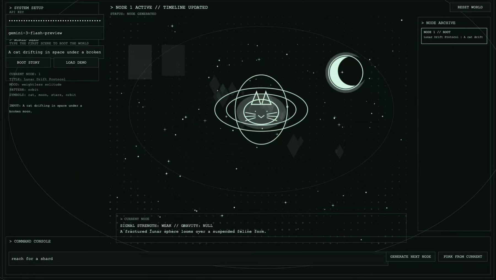

Signal Atlas
A terminal-style storytelling experiment that turns a sentence into a branching narrative and an animated field of symbols.
Open the p5.js prototype
Give the model a visual job
Gemini was asked to return a new story beat and concrete motifs from the input. p5.js translates those motifs into drawn glyphs such as a crescent, a cat, or a tower.
Designing for relevance
Early scenes looked atmospheric but lost the objects in the prompt. Requiring concrete symbols and mapping them to a small drawing vocabulary made the visuals easier to relate to the story. The original sketch depends on Gemini access for live generation.
Project documentation
